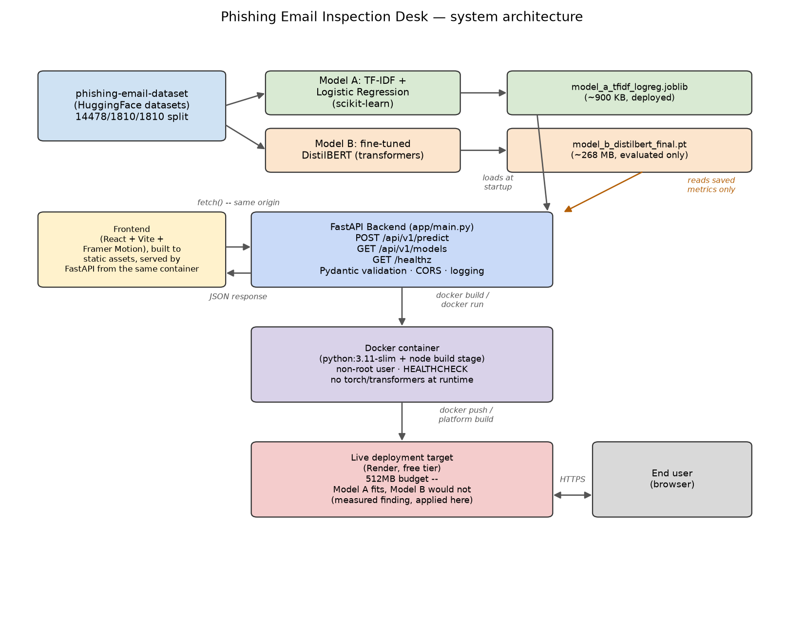

Static vs. contextual embeddings, chosen and measured — not just discussed — then deployed within a real, previously-measured memory constraint.
Abdullah Amir
Static embeddings, classical ML
Contextual embeddings, Transformer
This is Task 27's static-vs-contextual embeddings comparison, applied as a real architectural decision — now on a phishing-detection task, not sentiment.
An earlier build in this same body of work put a 3-model FastAPI service on a free-tier host with a measured out-of-memory failure (512MB limit, ~695MB actual footprint). Two "obvious" fixes were tried and measured — both made things worse, not better:
| Mitigation tried | Result |
|---|---|
| bfloat16 weight loading | 998MB (worse than 695MB baseline) |
| Dynamic int8 quantization | 1024MB (worse still) |
This capstone applies that lesson directly: deploy the model that's small by architecture, not by attempted compression after the fact.
Full numbers, curves, and error analysis in FINAL_REPORT.md.
"Dear Customer, we detected unusual activity on your account. Verify your identity within 24 hours or your access will be suspended. Click here to confirm your details immediately."
FLAGGED confidence 99%
$ docker run --memory=512m ... phishing-inspection-api:local
CONTAINER MEM USAGE / LIMIT MEM %
phishing-test 110MiB / 512MiB 21.48%
Under the exact memory cap that OOM'd an earlier project's service, this container uses 21% of the budget — deployed live to the same free tier, verified working, not estimated.

"empty", not caught by a null check — found only by reading
actual misclassified examples from the first training run, then fixed at the source./ with
html=True instead of a fixed /static prefix, discovered and fixed before it ever
reached production.uptime/free -h
rather than assumed to be a bug, and handled by patient background waiting.Thank you. Live demo and code: see README.md.